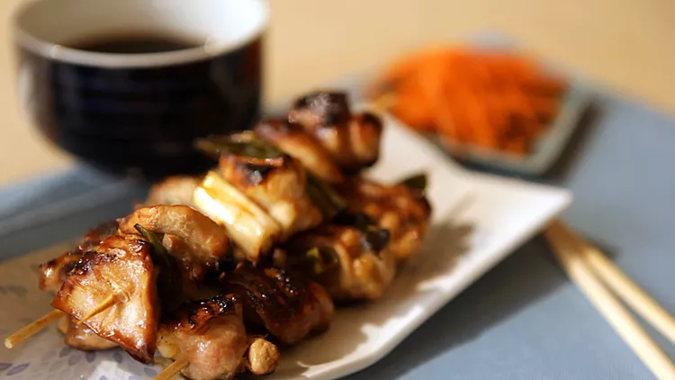

Easy Chicken Yakitori

Chicken Yakitori
Chicken yakitori is an easy Japanese dish to make at home.
Serve with white rice and sake for an easy but special meal!
Ingredients
- 10 wooden skewers
- 4 Skinless, boneless chicken thighs, cut into 1-inch cubes
- 4 Scallions, sliced into 1-inch pieces
- 1/2 cup sake
- 1/2 cup soy sauce
- 3 tablespoon mirin
- 2 tablespoon white sugar
- 1 teaspoon vegetable oil, or to taste
Directions
- Soak 10 wooden skewers in cold water for 15 minutes.
- Thread chicken pieces onto the soaked skewers, alternating with scallions.
- Combine sake, soy sauce, mirin, and sugar in a small saucepan and bring to a boil.
Reduce heat and simmer for 5 minutes. Reserve 1/2 of the sauce for dipping.
- Heat a grill pan over high heat and lightly brush with vegetable oil.
Add skewers and cook until chicken is no longer pink in the center,
basting frequently with 1/2 of the sauce, 7 to 10 minutes per side.